百舸船控
设置
离线模拟
模拟模式
蓝牙未连接

连接设备

退出全屏
左桨
0
%
停止
右桨
0
%
停止
前进
后退
左转
右转
船控使用经典蓝牙串口（SPP）
蓝牙设备
搜索设备
继续模拟
设置
×
界面皮肤
珍珠银
深蓝金属
控制协议
船端 PWM
适用于摇杆固件，双桨独立调速。
旧版兼容模式
适用于原版 51 船程序，支持前后、左右和停桨。
旧固件会保持最后一次指令。蓝牙断开后，船端无法自行停桨。
蓝牙点动调速
实验
按摇杆幅度分四档交替发送行驶和停车。先卸桨台架试用。
点动频率
频率越高，单次停顿越短，对蓝牙时延也越敏感。
4 Hz
8 Hz
12 Hz
断开设备后可更改控制协议和点动调速。
进入离线模拟